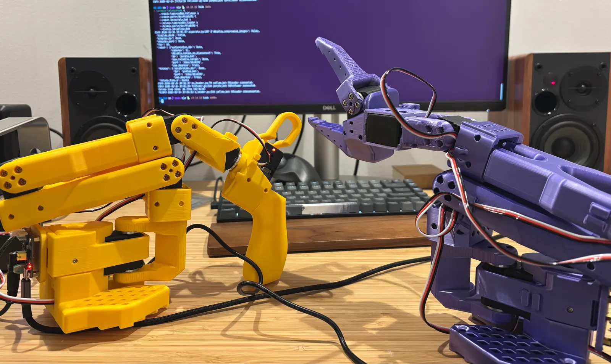

The arms, they move

Two arms, a lot of servos, built from scratch.
I 3D-printed part by part with a bambu printer I bought, ordered twelve STS3215 servos from AliExpress,€20 each and followed open-source designs and instructions. Two arms, built completely from scratch. The 3D printing alone took about two days for both.
Did I assemble everything on the first try? Ahah, no. At one point I had fully configured the leader arm… as a follower. Wrong configuration, wrong setup. Realized it only after everything was done. Had to redo it all from scratch.
It's also been a great opportunity to put my mechanical and electrical skills to the test, drawing on my background as an automotive engineer. There just something special seeing something move. Atoms moving.
3D Printing the arms.
It's physical. It's immediate. It's hard. It's real. Now I just need to give it a brain.
teleop run.
Right now it's pure teleoperation: I move one arm, the other follows. No AI, no learning, just direct position mapping. That moment alone was enough to trigger the curiosity in me completely into this new world of hardware.
The plan from here: teach the arms tasks by demonstration — move them through a motion a few dozen times, let it learn to replicate on its own (imitation learning). Then get into sim-to-real with NVIDIA Isaac Sim and Gazebo. Then, finally, put a vision-language-action model on it so it can see, reason, and act.
More on the "why" and the bigger picture in the origin story post on Binary Paths.